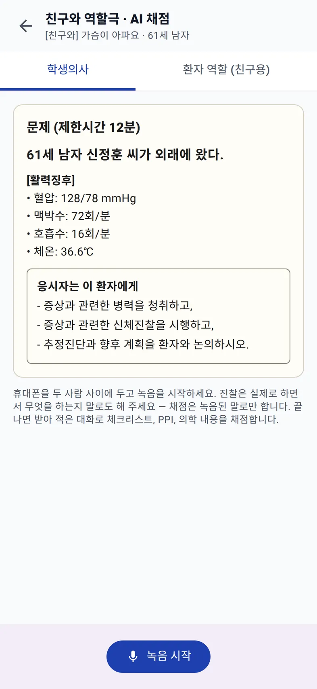
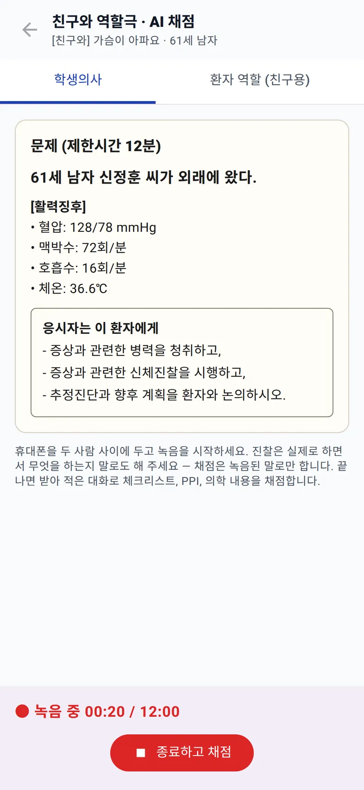
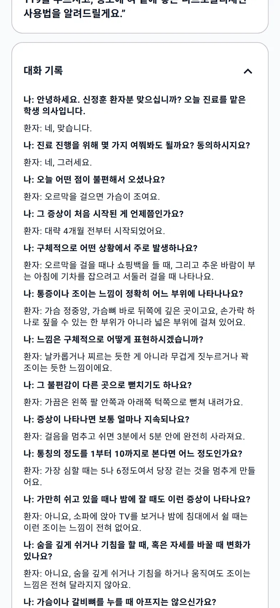

홈 › KMLE CPX 연습 › 친구와 역할극
연습 방법
친구와 CPX 역할극 연습하는 법
CPX는 둘이서 한 명은 의사, 한 명은 환자를 맡아 연습하는 경우가 많다. 이 방식이 잘 되려면 세 가지가 필요하다. 환자 역할이 볼 일관된 대본, 12분을 지키는 타이머, 그리고 끝난 뒤 무엇을 빠뜨렸는지 짚어 줄 기준이다.
역할극 연습이 흐지부지되는 이유
- 환자 역할이 즉석에서 지어낸다. 같은 질문에 대답이 바뀌거나, 묻지 않은 정보를 먼저 말해 버린다.
- 환자 역할이 채점까지 하느라 연기에 집중하지 못한다. 체크리스트를 보면서 대답하면 둘 다 어정쩡해진다.
- 피드백이 인상에 그친다. "전체적으로 괜찮았어"로 끝나고, 빠뜨린 질문이 무엇인지는 남지 않는다.
진행 순서
- 증례를 정한다. 의사 역할은 문제지만 본다. 2026년 형식대로 주호소는 보지 않는다.
- 환자 역할은 대본을 읽는다. 주호소, 질문별 대답, 환자의 생각 · 걱정 · 기대, 진찰받을 때의 반응, 그리고 "묻는 것에만 대답한다"는 연기 규칙.
- 12분 타이머를 켜고 시작한다. 2분 전 알림이 울리면 의사 역할은 설명 단계로 넘어간다.
- 끝나면 기준을 놓고 맞춰 본다. 병력 · 신체진찰 · 환자 교육 체크리스트와 PPI 6개 영역을 항목별로 확인한다.
- 역할을 바꾼다. 환자 역할을 해 보면 어떤 질문이 답하기 어려운지 알게 된다.
휴대폰 한 대로 녹음하고 채점까지
Bedside English 웹 앱의 친구와 역할극 · AI 채점 모드는 위 과정을 한 번에 처리한다. 증상을 고르고 문제지에서 친구와 역할극 (AI 채점)을 누르면 화면이 두 탭으로 나뉜다.


- 환자 역할 카드. "학생의사가 물어본 것에만 짧게 대답하세요", "생각·걱정·기대는 물을 때 말하고, 설명이 끝났는데도 걱정을 묻지 않으면 한 번 물어보세요" 같은 연기 규칙과, 주제별 대답(언제 시작했는지, 어디가 아픈지 등)이 정리되어 있다. 대본의 대답은 증례 원문대로 영어로 적혀 있고, 그 주제를 물으면 한국어로 짧게 답하라고 안내한다.
- 방 전체 녹음. 휴대폰을 두 사람 사이에 두고 녹음 시작. 화면에 "녹음 중 00:20 / 12:00"처럼 12분 기준 시간이 흐른다. 진찰은 실제로 하면서 무엇을 하는지 말로도 해야 한다. 채점은 녹음된 말로만 한다.
- 화자 구분 받아쓰기. 종료하고 채점을 누르면 Gemini가 녹음을 "나"와 "환자"로 나누어 받아쓴다.
- 같은 결과표. AI 환자와 연습할 때와 같은 체크리스트, PPI, 진단·계획 기준으로 채점하고 채점 기록에 "[친구와]"로 남긴다.


채점 예시: 66점
61세 남자 신정훈 씨, '오르막을 걸으면 가슴이 조인다'는 증례로 약 6분짜리 시연용 대화를 녹음해 채점한 결과다. 병력청취는 80점(25개 중 20개)이었고, 추정진단 '안정형 협심증'도 실제 진단(만성 안정형 협심증)과 맞았다. 그런데 총점은 66점이었다.
- 신체진찰 40점. 진찰 10개 항목 중 4개만 말로 했다. 결과표는 손 위생, 흉벽 촉진, 청진이 녹음에 없다고 짚었다. 실제로 손을 씻었더라도 말하지 않으면 녹음에는 남지 않는다.
- 환자 안전 경고. 결과표 맨 위에 빨간 상자로 "흉통 지속 시 응급 대처(119 연락, 니트로글리세린 복용법)에 대한 구체적 교육 누락"이 떴다. 놓친 핵심 항목에는 바로 쓸 문장이 붙어 있다. "가슴 통증이 20분 넘게 계속되면 직접 운전하지 마시고 바로 119를 부르세요."
- PPI. 6개 영역 중 4개가 우수, '이해하기 쉽게 설명했다'와 '신체진찰 태도'가 보통이었다.

이 모드에서는 실시간 음성 AI가 돌지 않는다. 받아쓰기와 채점에만 Gemini API 키가 쓰인다.
두 사람이 동시에 말하면 화자 구분이 틀릴 수 있다. 채점 결과가 틀린 항목은 직접 고칠 수 있고 점수는 다시 계산된다. 녹음에 실제 환자 정보나 개인 정보가 들어가지 않게 한다.
혼자 연습과 역할극, 언제 무엇을
| AI 환자와 혼자 | 친구와 역할극 | |
|---|---|---|
| 좋은 점 | 언제든 할 수 있고, 환자가 대본에서 벗어나지 않는다 | 표정, 시선, 실제 진찰 동작까지 연습된다 |
| 약한 점 | 신체진찰이 말로만 진행된다 | 시간 맞추기 어렵고, 환자 역할의 연기에 따라 달라진다 |
| 맞는 시기 | 임상표현별 질문 틀을 익힐 때, 48개를 넓게 돌 때 | 틀이 잡힌 뒤 실전 감각과 PPI를 다듬을 때 |
다음 스터디에서 한 번 녹음해 보기
웹 앱이라 아이폰·아이패드·PC·안드로이드 브라우저에서 바로 연다. 설치·가입·구독·광고 없음. 무료 Gemini API 키로 동작한다.
관련 글: 2026 실기시험 형식 정리 →